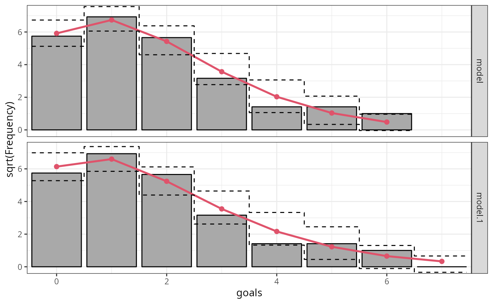
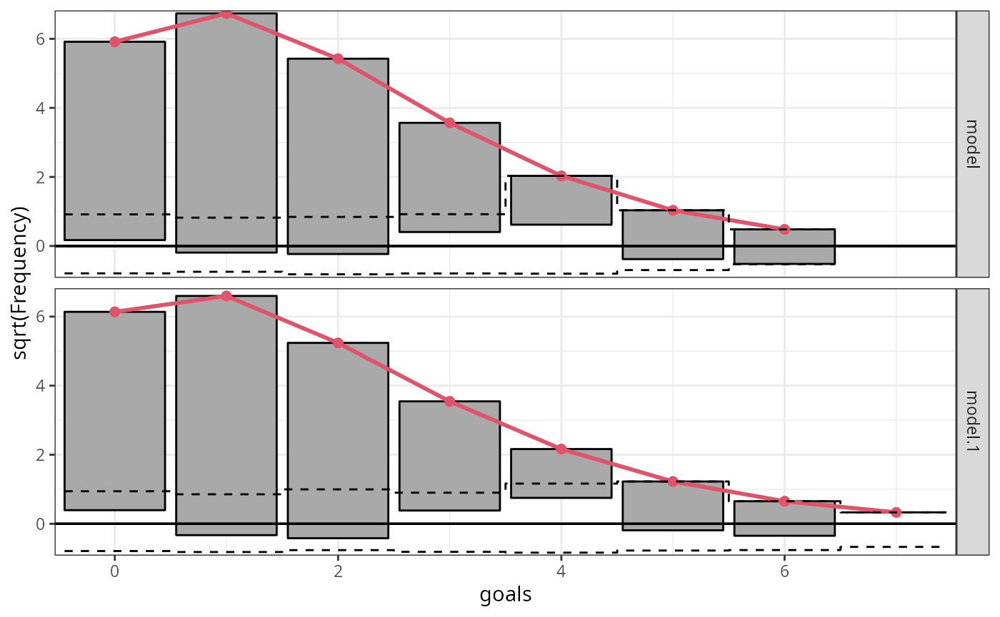
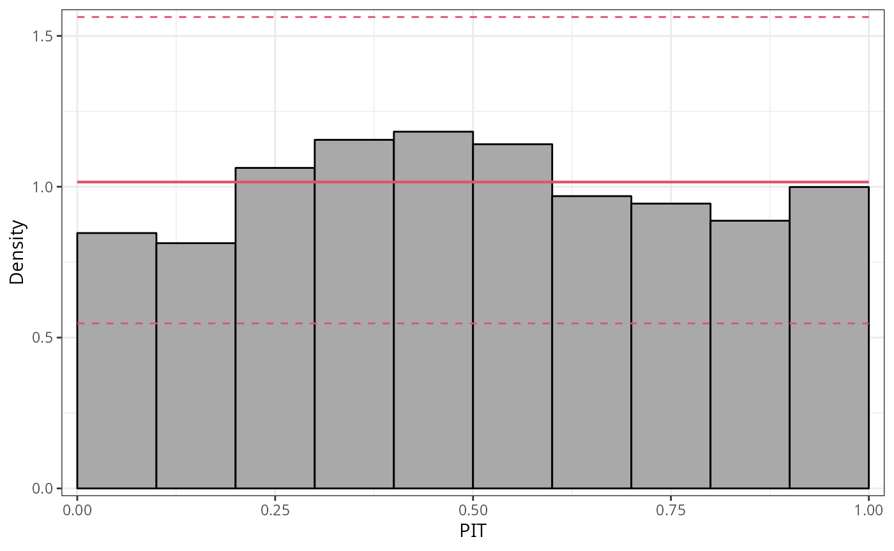
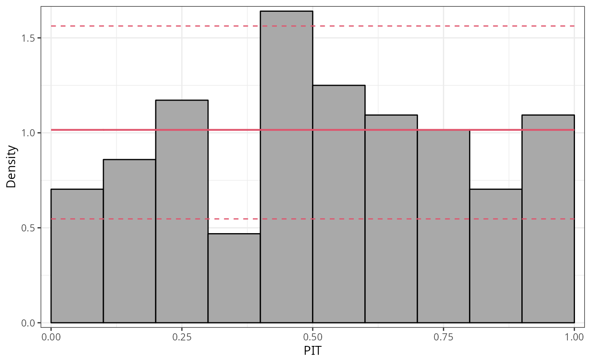
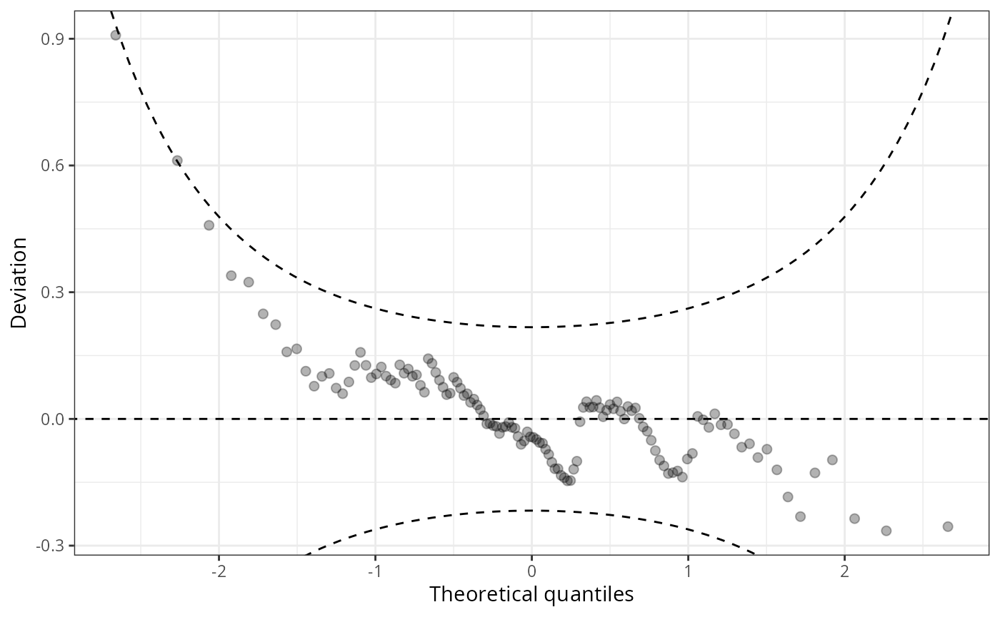

Illustration: Goals in the 2018 FIFA World Cup
illustration_fifa_2018.RmdThis vignette provides two real cases discussing the graphical
evaluation of the marginal and probabilistic calibration of
probabilistic regression models. The first example provides a short case
study modeling the goals at the 2018 FIFA World Cup employing a Poisson
distribution. It is a direct extension of the vignette “The
Poisson Distribution: From Basic Probability Theory to Regression
Models” given in distributions3.
Goals in the 2018 FIFA World Cup
This use-case employs the Poisson distribution for modeling count
data along predicted probabilities for the number of goals in soccer
matches from the 2018 FIFA World Cup. The full analysis with an
illustrative introduction from basic probability theory to regression
models using the R package distributions3
is given here.
To investigate the number of goals scored per match in the 2018 FIFA
World Cup, the FIFA2018 data set provides two rows, one for
each team, for each of the 64 matches during the tournament. In the
following, we treat the goals scored by the two teams in the same match
as independent which is a realistic assumption for this particular data
set. We just remark briefly that there are also bivariate
generalizations of the Poisson distribution that would allow for
correlated observations but which are not considered here.
In addition to the goals, the data set provides some basic meta-information for the matches (an ID, team name abbreviations, type of match, group vs. knockout stage) as well as some further covariates that we will revisit later in this document. The data looks like this:
## goals team match type stage logability difference
## 1 5 RUS 1 A group 0.1530732 0.8638406
## 2 0 KSA 1 A group -0.7107673 -0.8638406
## 3 0 EGY 2 A group -0.2066409 -0.4438080
## 4 1 URU 2 A group 0.2371671 0.4438080
## 5 3 RUS 3 A group 0.1530732 0.3597142
## 6 1 EGY 3 A group -0.2066409 -0.3597142For now, we will focus on the goals variable only. A
brief summary yields
summary(FIFA2018$goals)## Min. 1st Qu. Median Mean 3rd Qu. Max.
## 0.000 0.000 1.000 1.297 2.000 6.000showing that the teams scored between \(0\) and \(6\) goals per match with an average of \(\bar y = 1.297\) from the observations \(y_i\) (\(i = 1, \dots, 128\)). The corresponding table of observed relative frequencies are:
prop.table(table(FIFA2018$goals))##
## 0 1 2 3 4 5 6
## 0.2578125 0.3750000 0.2500000 0.0781250 0.0156250 0.0156250 0.0078125(Note that in recent versions of R using proportions()
rather than prop.table() is recommended.)
This confirms that goals are relatively rare events in a soccer game with each team scoring zero to two goals per match in almost 90 percent of the matches. Below we show that this observed frequency distribution can be approximated very well by a Poisson distribution which can subsequently be used to obtain predicted probabilities for the goals scored in a match.
From basic probability theory to regression models
In a first step, we simply assume that goals are scored with a constant mean over all teams and fit a single Poisson distribution for the number of goals. To do so, we obtain a point estimate of the Poisson parameter by using the empirical mean \(\hat \lambda = \bar y = 1.297\) and set up the corresponding distribution object:
## [1] "Poisson distribution (lambda = 1.297)"This actually corresponds to the maximum likelihood estimator for this distribution fitting a generalized linear model (GLM) to the data that links the expected number of goals per team/match \(\lambda_i\) to the linear predictor \(x_i^\top \beta\) with regressor vector \(x_i^\top\) and corresponding coefficient vector \(\beta\) using a log-link: \(\log(\lambda_i) = x_i^\top \beta\).
Here, in the simplest case fitting an intercept-only model without
further regressors, the regressor vector can be written as \(x_i^\top = 1\) and the maximum likelihood
estimator \(\hat \beta\) with
corresponding inference, predictions, residuals, etc. can be obtained
using the glm() function from base R with
family = poisson:
m_ic <- glm(goals ~ 1, data = FIFA2018, family = poisson)
m_ic##
## Call: glm(formula = goals ~ 1, family = poisson, data = FIFA2018)
##
## Coefficients:
## (Intercept)
## 0.26
##
## Degrees of Freedom: 127 Total (i.e. Null); 127 Residual
## Null Deviance: 144.2
## Residual Deviance: 144.2 AIC: 372.9The corresponding prediction for the number of goals can be obtained
manually from the extracted coef() by applying
exp() (as the inverse of the log-link).
## (Intercept)
## 1.296875Or equivalently the predict() function can be used with
type = "response" in order to get the expected \(\hat \lambda_i\) (rather than just the
linear predictor \(x_i^\top \hat
\beta\) that is predicted by default).
predict(m_ic, newdata = data.frame(difference = 0), type = "response")## 1
## 1.296875This yields the same predicted Poisson distribution, identical to \(p_const\), for all teams and matches in this tournament – most likely an incorrect assumption:
## 1 2
## "Poisson distribution (lambda = 1.297)" "Poisson distribution (lambda = 1.297)"
## 3 4
## "Poisson distribution (lambda = 1.297)" "Poisson distribution (lambda = 1.297)"
## 5 6
## "Poisson distribution (lambda = 1.297)" "Poisson distribution (lambda = 1.297)"To account for different expected performances from the teams in the
2018 FIFA World Cup, the FIFA2018 data provides an
estimated logability for each team. These have been
estimated by Zeileis, Leitner, and Hornik
(2018) prior to the start of the tournament (2018-05-20) based on
quoted odds from 26 online bookmakers using the bookmaker consensus
model of Leitner, Zeileis, and Hornik
(2010). The difference in logability
between a team and its opponent is a useful predictor for the number of
goals scored.
Hence, the intercept-only model m_ic can be extended by
using the regressor vector \(x_i^\top = (1,
\mathtt{difference}_i)\):
m_reg <- glm(goals ~ difference, data = FIFA2018, family = poisson)
m_reg##
## Call: glm(formula = goals ~ difference, family = poisson, data = FIFA2018)
##
## Coefficients:
## (Intercept) difference
## 0.2127 0.4134
##
## Degrees of Freedom: 127 Total (i.e. Null); 126 Residual
## Null Deviance: 144.2
## Residual Deviance: 128.7 AIC: 359.4Here, the slope of \(0.413\) can be interpreted as an ability elasticity of the number of goals scored. This is because the difference of the log-abilities can also be understood as the log of the ability ratio. Thus, when the ability ratio increases by \(1\) percent, the expected number of goals increases approximately by \(0.413\) percent.
In comparison to the intercept-only model m_ic, this
yields a more realistic outcome providing a different predicted Poisson
distribution for each team/match in the tournament. We can set up the
vector of all \(128\)
Poisson() distribution objects by extracting the vector of
all fitted point estimates \((\hat \lambda_1,
\dots, \hat \lambda_{128})^\top\):
## 1
## "Poisson distribution (lambda = 1.7680)"
## 2
## "Poisson distribution (lambda = 0.8655)"
## 3
## "Poisson distribution (lambda = 1.0297)"
## 4
## "Poisson distribution (lambda = 1.4862)"
## 5
## "Poisson distribution (lambda = 1.4354)"
## 6
## "Poisson distribution (lambda = 1.0661)"Model evaluation: Marginal calibration
Marginal calibration is generally concerned with whether the observed frequencies match the frequencies expected by the model. For discrete observations, frequencies for the observations themselves can be considered; for continuous observations or more generally, frequencies for intervals of observations are being used. Here, the expected frequencies are computed by differences between the predictive CDFs \(F( \cdot )\), evaluated at the interval breaks. Hence, marginal calibration is always obtained on the observation scale compared to the probabilistic calibration performed on the probability scale. This makes it especially useful for evaluating count data models which predictions are often close to zero.
For evaluating the marginal calibration of the Poisson models for the
number of goals scored, we compute the expected absolute
frequencies by averaging across the expectations per team/match from
both regression model and compare these with the observed absolute
frequencies:
observed <- table(FIFA2018$goals)
expected_ic <- distributions3::pdf(p_ic, 0:6)
expected_ic <- colMeans(expected_ic) * sum(observed)
expected_reg <- distributions3::pdf(p_reg, 0:6)
expected_reg <- colMeans(expected_reg) * sum(observed)
cbind(observed, expected_ic, expected_reg) ## observed expected_ic expected_reg
## 0 33 34.9932527 37.679930
## 1 48 45.3818746 43.541948
## 2 32 29.4273093 27.450378
## 3 10 12.7211806 12.574218
## 4 2 4.1244453 4.684102
## 5 2 1.0697780 1.501012
## 6 1 0.2312281 0.426588Graphically, this comparison can be shown as a so-called
rootogram (Kleiber and Zeileis
2016) where the gray bars represent the observed frequencies
overlayed by the expected frequencies as a red line. By using the
function rootogram(), we can reproduce the previous results
plugging in the model objects m_ic and
m_reg:
r1 <- rootogram(m_ic, fitted = TRUE, style = "standing", scale = "raw", ref = FALSE, plot = FALSE)
r2 <- rootogram(m_reg, fitted = TRUE, style = "standing", scale = "raw", ref = FALSE, plot = FALSE)
c(r1, r2)## A `rootogram` object with `scale = 'raw'` and `style = 'standing'`
##
## observed expected mid width group
## 1 33 34.9932527 0 0.9 1
## 2 48 45.3818746 1 0.9 1
## 3 32 29.4273093 2 0.9 1
## 4 10 12.7211806 3 0.9 1
## 5 2 4.1244453 4 0.9 1
## 6 2 1.0697780 5 0.9 1
## 7 1 0.2312281 6 0.9 1
## 8 33 37.6799296 0 0.9 2
## 9 48 43.5419481 1 0.9 2
## 10 32 27.4503775 2 0.9 2
## 11 10 12.5742178 3 0.9 2
## 12 2 4.6841019 4 0.9 2
## 13 2 1.5010116 5 0.9 2
## 14 1 0.4265880 6 0.9 2
## 15 0 0.1094064 7 0.9 2
Further, in order to stabilize the variances of the discrepancies, i.e., putting more focus on discrepancies for small frequencies, we can show the frequencies on a square root scale:

In a second step, we employ a so-called hanging rootogram
where bars representing the square-root of the observed frequencies are
“hanging” from the square-root of the expected frequencies in the red
line. Here, the offset around the x-axis compared to a reference line
clearly shows the difference between the two frequencies for the
intercept-only model m_ic and the full probabilistic model
m_reg. For both models the differences are reasonably close
to zero indicating a rather good marginal fit:
ggplot2::autoplot(c(r1, r2), scale = "sqrt", style = "hanging", ref = TRUE) # FIXME: (ML) names got lost
So far we have only evaluated the marginal calibration comparing whether the observed frequencies match the frequencies expected by estimated model on the observational scale. In the next step we will evaluate the probabilistic calibration which is performed on the probability scale.
Model evaluation: Probabilistic calibration
Probabilistic calibration is usually assessed using probability integral transform (PIT) values (Dawid 1984; Diebold, Gunther, and Tay 1998; Gneiting, Balabdaoui, and Raftery 2007) or so-called PIT residuals (Warton, Thibaut, and Wang 2017). These are simply the predictive cumulative distribution function (CDF) evaluated at the observations
\[u_i = F(y_i | \, \hat{\boldsymbol{\theta}}_i),\]
where \(F( \cdot )\) denotes the CDF of the modeled distribution \(f( \cdot )\) with estimated parameters \(\hat{\boldsymbol{\theta}}_{i}\). PIT residuals have the desirable property, that if the model is a good approximation to the true data-generating process, i.e., the observation is drawn from the predictive distribution, the PIT residuals \(u_i\) are approximately uniformly distributed on \([0, 1]\) for continuous predictive distributions \(F( \cdot )\). Plotting the histogram of the PIT residuals and checking for uniformity is therefore a common empirical way of checking for calibration:
p1 <- pithist(m_reg)
To focus more on violations of the distributional assumption in the tails of the distribution, PIT residuals can also be transformed to the normal scale or another scale if preferred. This allows the extreme values to be spread more widely, so that less values are included in the outer intervals. However, this has the drawback that detecting misspecification is more complicated than checking for uniformity:
p2 <- pithist(m_reg, trafo = qnorm, type = "random", simint = FALSE) # `type = "expected"` does not work, check!
Discretization, i.e., the representation of values in intervals, has the advantage that it usually improves the readability of graphical representations. However, discretization can also hide certain misspecifications: breakpoints are often quite arbitrary and can mask misspecifications of relatively few but extreme values in the outer tails of the distribution. Here, classical Q-Q plots are clearly superior to PIT histograms:
q1 <- qqrplot(m_reg, confint = "line", simint = FALSE)Since small to medium deviations are nevertheless difficult to detect in Q-Q plots, untilting the plot makes detecting pattern of departure from a now horizontal line much easier. Here, expected quantiles are subtracted from the observed quantiles:
w1 <- wormplot(m_reg, confint = "line", simint = FALSE)
This so-called de-trended Q-Q plot is best known as worm plot (Buuren and Fredriks 2001).